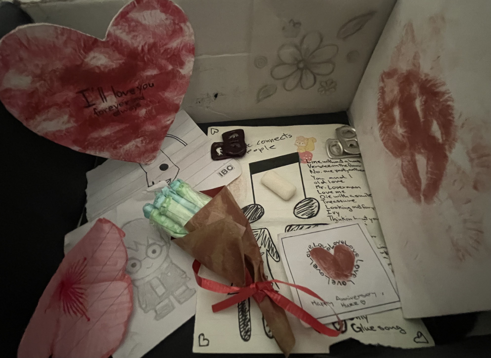

How long it's been since we made it official
Loading...
Our first "I love you"
15 November 2024
A funny memory

you kept beating me that day
A memory I'll never forget
I'll forever and deeply cherish these, deep below my heart
My promises to you
I promise to never let a day pass without making you feel loved.
I promise to be gentler with your heart.
I promise to be a man you feel safe growing with.
I promise to listen, really listen, to your heart when you need me.
I promise to be honest, even when the truth is hard to say.
I promise to grow with you, and never let us drift apart.
I promise to never take you for granted, and always show my appreciation.
And finally, I promise to always choose you, every single day.
Thank you for loving me. Thank you for staying.
I want a lifetime with you.